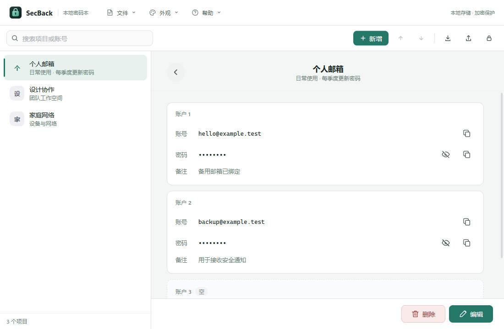
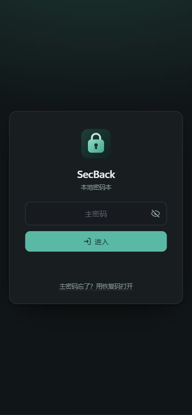
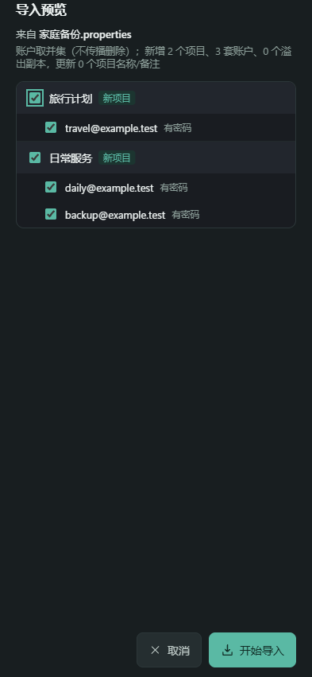

Windows
Windows 10 / 11 · x64
项目列表与账户详情并排呈现，在桌面上从容管理。
下载 Windows 版直接运行版 · .exe · v0.1.1点击直接下载 · 运行需要 WebView2
LOCAL FIRST. ALWAYS YOURS.
一个简洁、专注的中文密码本。
把账户整理好，把加密密库留在自己手中。
GET SECBACK
当前版本 0.1.1
从 GitHub Releases 直接下载
Windows 10 / 11 · x64
项目列表与账户详情并排呈现，在桌面上从容管理。
下载 Windows 版直接运行版 · .exe · v0.1.1点击直接下载 · 运行需要 WebView2
Android 7.0+ · arm64
随身查看账户，使用系统文件选择器导入和导出密库。
下载 Android 版安装包 · .apk · v0.1.1点击直接下载 · 0.1.1 待补充真机验证
目前提供 Windows x64 与 Android arm64 构建，其他平台暂未交付。
A QUIETER WORKSPACE
熟悉的中文界面，让整理和查找
成为简单的日常。

主密码解锁后查看账户；导入外部 SecBack 密库时，先预览、再选择需要合并的项目。


真实应用界面 · 仅使用虚构示例账户 · 此处为截图预览
LESS FRICTION, MORE ORDER
围绕账户管理做好每一个细节，
保持轻巧，也保持专注。
一个项目，最多三套账户。账号、密码和备注集中保存，工作与生活井井有条。
搜索项目或账号，快速缩小范围。按自己的使用习惯调整顺序，常用项目更好找。
密码默认隐藏，需要时再查看。一键复制账号或密码，让每次使用更省一步。
导出加密备份，在另一台设备上导入。解锁外部密库后，预览并选择项目合并。
默认闲置五分钟锁定密库。Android 切至后台也会锁定，重新使用时再次解锁。
支持修改主密码，并提供恢复码入口。妥善离线保管恢复码，为忘记密码留一条路。
使用 AES-256-GCM 加密密库，以 PBKDF2-HMAC-SHA256 从主密码派生密钥。新建密库默认使用 200,000 轮派生。
AES-256-GCMPBKDF2-SHA256应用保留最近三份加密版本备份。它们与原库在同一目录，仍需定期导出独立副本，并在另一处妥善保存。
恢复码用于忘记主密码时打开已有密库；它无法找回丢失的密库文件。恢复码与独立备份，请同时准备。
A SIMPLE ROUTINE
设置主密码，保存恢复码。恢复码应与密库分开、离线保管。
按项目记录账号、密码和备注，用搜索与排序保持清晰。
保留加密备份，跨设备使用时手动导入并预览合并。
WHAT'S NEW
Android 0.1.1 已完成构建与模拟视口检查，尚待补充真机验证。
GOOD TO KNOW
SecBack 没有服务端、在线账号或自动云同步，密库保存在本地。跨设备迁移需要您手动导出加密备份，再在另一台设备导入。
目前的“外部密库导入”指兼容格式的 SecBack 加密密库，支持解锁、预览和选择项目合并；不代表支持任意密码管理器、CSV 或浏览器密码数据。
忘记主密码时，可使用提前保管的恢复码打开已有密库。更换手机前请导出加密备份并验证可用。卸载 Android 应用或清除应用数据会删除本地密库，恢复码无法替代密库文件。
当前未提供系统自动填充集成，也没有实时同步。可在应用内复制账号或密码；设备之间通过加密备份导出、导入和合并来迁移数据。
请设置足够强的主密码，保护恢复码和备份，并保持设备可信。加密无法替代设备安全；复制内容可能被系统或其他应用读取，应用也无法保证所有内存中的明文都被物理擦除。
从一个由自己保管的密码本开始。